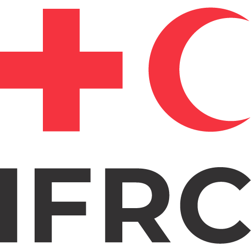
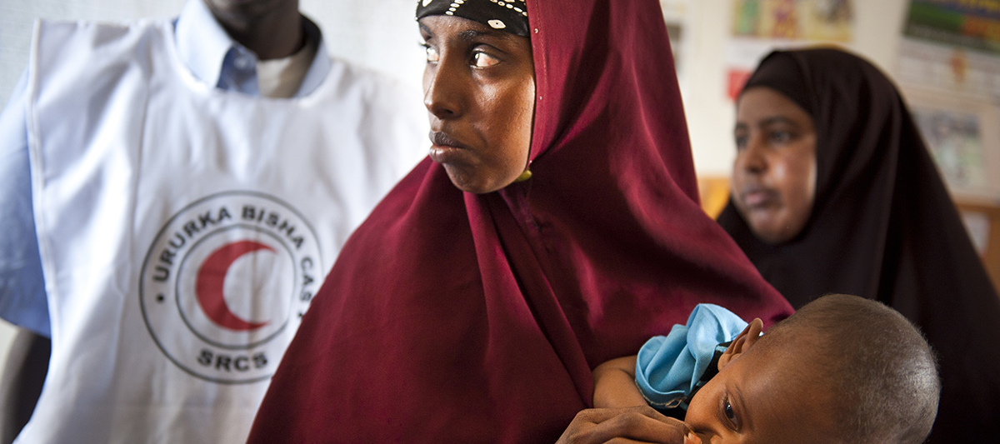
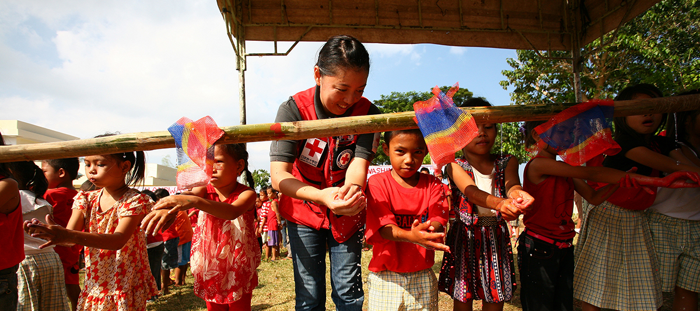
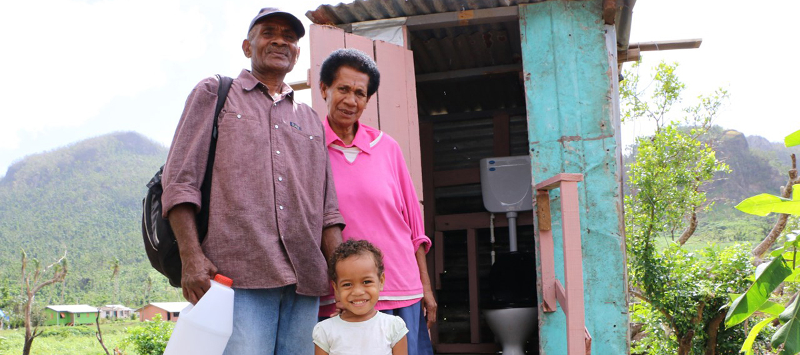

Control de Epidemias para Voluntarios
English
|
Français
|
Español

Entender
Enfermedades

Voluntarios
Acción

Mensajes
Comunitarios
Descargue todo el kit de herramientas en formato PDF en una carpeta zip.
Control de epidemias para voluntarios – Manual de entrenamiento
Compartir esta página en